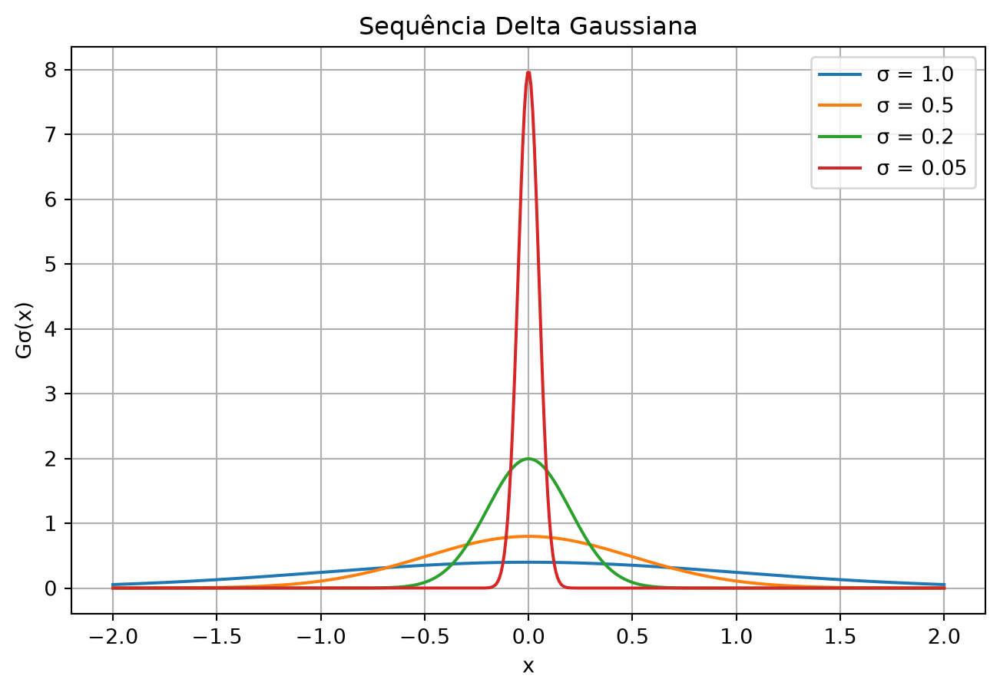

Função Delta de Dirac, Funções de Green e Distribuições
1 Introdução
Nesta aula, vamos conectar o Teorema Fundamental do Cálculo à função delta de Dirac e às funções de Green. A ideia central é que a delta não é um objeto mágico — ela é uma generalização natural da derivada da função degrau (Heaviside).
OBSERVAÇÃO DO PROFESSOR: “Isso não tem nada a ver com gravitação ou eletromagnetismo em si. Na verdade, é uma consequência indireta do espaço ser euclidiano e de como as coisas se espalham no espaço de acordo com a dimensão.”
2 A Função Degrau de Heaviside
A função degrau (ou função de Heaviside) é definida como:
\[ \theta(x) = \begin{cases} 1, & x > 0 \\ 0, & x \leq 0 \end{cases} \]
Características: - É uma função com uma descontinuidade em \(x=0\). - Representa uma transição abrupta de 0 para 1.
3 A Função Delta de Dirac
A delta de Dirac \(\delta(x)\) é definida pela propriedade de filtragem (ou “sifting”):
\[ \int_{-\infty}^{\infty} \delta(x - x_0) \, f(x_0) \, dx_0 = f(x) \]
Para qualquer função \(f\) suave (bem-comportada).
Interpretação: A delta “seleciona” o valor de \(f\) no ponto \(x = x_0\).
3.1 Delta como Derivada da Theta
Usando o Teorema Fundamental do Cálculo:
\[ \frac{d}{dx} \int_{-\infty}^{x} f(x_0) \, dx_0 = f(x) \]
Reescrevendo o limite superior com a função \(\theta\):
\[ \int_{-\infty}^{\infty} \theta(x - x_0) \, f(x_0) \, dx_0 = \int_{-\infty}^{x} f(x_0) \, dx_0 \]
Derivando ambos os lados:
\[ \int_{-\infty}^{\infty} \frac{d}{dx} \theta(x - x_0) \, f(x_0) \, dx_0 = f(x) \]
Portanto:
\[ \boxed{\frac{d}{dx} \theta(x - x_0) = \delta(x - x_0)} \]
4 Construindo a Theta a Partir de Funções Suaves
Podemos construir \(\theta(x)\) usando a função módulo:
- Seja \(g(x) = |x|\).
- A derivada de \(g(x)\) é \(\text{sgn}(x)\) (com ambiguidade em \(x=0\)).
- Então: \[ \theta(x) = \frac{g'(x) + 1}{2} \]
Relação com o módulo:
\[ |x| = \sqrt{x^2} \]
Assim: \[ \theta(x) = \frac{1}{2}\left(\frac{d}{dx}\sqrt{x^2} + 1\right) \]
5 Aproximação Gaussiana para a Delta
Considere a Gaussiana (distribuição normal):
\[ G_\sigma(x) = \frac{1}{\sqrt{2\pi}\,\sigma} \exp\left(-\frac{x^2}{2\sigma^2}\right) \]
Propriedades: - Normalizada: \(\int_{-\infty}^{\infty} G_\sigma(x) \, dx = 1\) - Simétrica: \(G_\sigma(-x) = G_\sigma(x)\) - Quando \(\sigma \to 0\), \(G_\sigma(x)\) fica mais estreita e mais alta, concentrando-se em \(x=0\).
5.1 Demonstração da Propriedade de Filtragem
Para qualquer função \(f(x)\) com série de Taylor:
\[ f(x) = f(0) + f'(0)x + \frac{f''(0)}{2}x^2 + \cdots \]
Temos:
\[ \lim_{\sigma \to 0} \int_{-\infty}^{\infty} G_\sigma(x) f(x) \, dx = f(0) \]
Por quê? - Termos ímpares se anulam por simetria (função par vezes função ímpar). - Termos pares são proporcionais a potências positivas de \(\sigma\), então vão a zero. - Apenas o termo constante \(f(0)\) sobrevive.
6 Funções de Green em 1D
A função de Green em 1D satisfaz:
\[ \frac{d^2}{dx^2} G(x, x_0) = \delta(x - x_0) \]
A solução é:
\[ \boxed{G(x, x_0) = \frac{1}{2} |x - x_0|} \]
7 Dependência com a Dimensão
A função de Green depende da dimensionalidade do espaço:
| Dimensão | Função de Green | Comportamento |
|---|---|---|
| 1D | \(\frac{1}{2}|x - x_0|\) | Cresce com a distância |
| 2D | \(\frac{1}{2\pi} \log|x - x_0|\) | Cresce logarithmicamente |
| 3D | \(\frac{1}{4\pi |x - x_0|}\) | Decai como \(1/r\) |
8 Interpretação Física
- Funções delta representam partículas pontuais ou impulsos instantâneos.
- São limites de processos físicos suaves (ex.: aceleração instantânea é o limite de uma aceleração muito grande em um tempo muito curto).
- Isso é análogo a definir números irracionais como limites de sequências de números racionais.
9 O Truque do Cálculo da Integral Gaussiana
Para provar a normalização da Gaussiana, usamos o truque das coordenadas polares:
\[ \left( \int_{-\infty}^{\infty} e^{-x^2/2\sigma^2} dx \right)^2 = \int_{-\infty}^{\infty} \int_{-\infty}^{\infty} e^{-(x^2+y^2)/2\sigma^2} dx\,dy \]
Em coordenadas polares \((r, \theta)\):
\[ = \int_0^{2\pi} \int_0^\infty e^{-r^2/2\sigma^2} r \, dr \, d\theta = 2\pi \sigma^2 \]
Portanto:
\[ \int_{-\infty}^{\infty} e^{-x^2/2\sigma^2} dx = \sqrt{2\pi}\,\sigma \]
Assim, o fator de normalização \(1/\sqrt{2\pi}\sigma\) está correto.
10 Visualização: Sequência Delta Gaussiana
Code
import numpy as np
import matplotlib.pyplot as plt
x = np.linspace(-2, 2, 500)
sigmas = [1.0, 0.5, 0.2, 0.05]
plt.figure(figsize=(8, 5))
for sigma in sigmas:
g = (1 / (np.sqrt(2 * np.pi) * sigma)) * np.exp(-(x**2) / (2 * sigma**2))
plt.plot(x, g, label=f"σ = {sigma}")
plt.xlabel("x")
plt.ylabel("Gσ(x)")
plt.title("Sequência Delta Gaussiana")
plt.legend()
plt.grid(True)
plt.show()